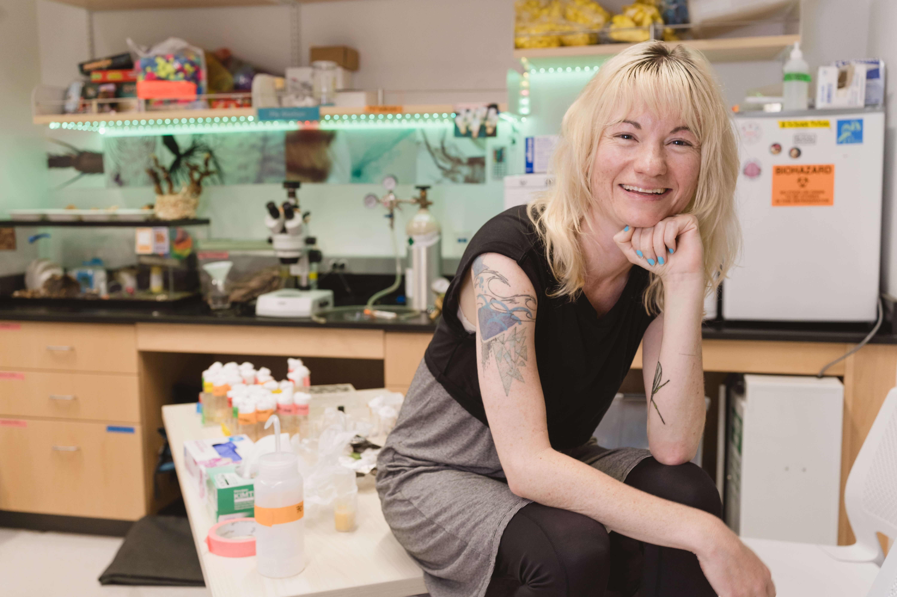

Hi! I’m Dr. Ann Marie Macara, a high school science teacher, bioartist, and former neuroscientist. I earned my Honors BSc in Animal Physiology with a minor in Visual Studies from the University of Toronto, then completed my Ph.D. in neuroscience at the University of Michigan. After leaving academia to pursue science museum exhibit design, I discovered my love of teaching at a marine science institute in San Francisco—which led me to my current role at Wildwood School in Los Angeles.
With over seven years of classroom experience, I’ve taught everything from 5th grade to college-level science. Currently, I teach ‘Advanced Biology and Biotechnology’ and ‘Neuroscience’ to 11th and 12th graders. I’ve always been passionate about both art and science—but it was through teaching that I realized I could truly combine them. That’s when I began exploring bioart as a collaborative practice between humans and the natural world.
To me, bioart means co-creating with living materials and biological processes—from microbial paints to mycelium sculpture. This practice deeply informs my teaching: I believe science education should help students form real connections with organisms, ecosystems, and the technologies that shape our future.
Contact: bioartlab.studio@gmail.com